|
North York Temple - February
2008 |
| 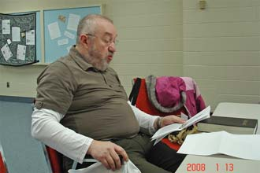 |
С октября 2007 года и по сегодняшний февраль 2008, т.е.
почти 5 месяцев мы собираемся каждое воскресенье с 9:30 до 11:00 для изучения Библии в North
York Temple. Брат Богдан неизменный руководитель нашего собрания. Его огромная эрудиция, приобретенная многолетним скрупулезным изучением Библии, позволила сделать эти занятия увлекательным путешествием во времени и пространстве. |
| 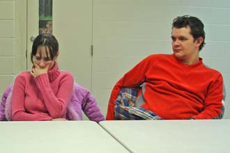 | 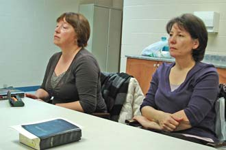 |
|
Конечно, все это было не вновь созданной группой, а
сложившимся за несколько лет ядром русскоязычной группы Northview Community Church. Тогда мы
собирались вечером каждую пятницу. После разгрома церкви мы не потеряли друг друга, а перешли под защиту Salvation Army. Господь не оставил верных без крыши над головой и дал нам возможность продолжить жизненный путь. |
| 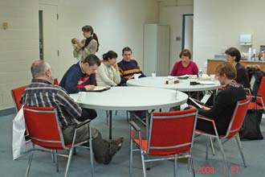 | 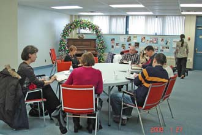 |
| Приходили новые люди и возвращались старые, т.е. шел нормальный процесс формирования Церкви. Иисус в Матф.18:20 сказал: "... где двое или трое собраны во имя Мое, там Я посреди них." |
| 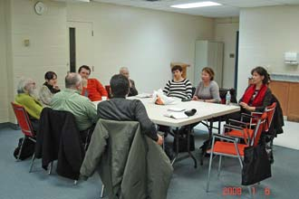 | 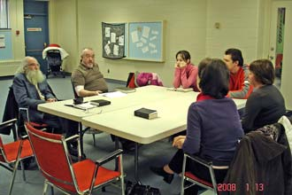 |
| Речь не идет о создании локальной земной церкви, а о воссоздании части Небесной Церкви Иисуса Христа. Нас хотели выбросить (и выбросили!) на улицу из здания на Drewry 172, как выбросили "старую" мебель и "устаревшее" оборудование, а мы, как капельки ртути, стали опять собираться вместе. |
| 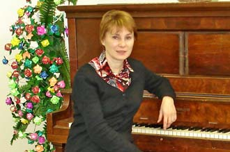 | 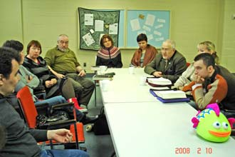 |
| Какая могучая сила собирает нас, таких разных по
характерам, возрастам, жизненному опыту и устремлениям, собирает нас вместе и заставляет думать
и говорить о нашем назначении в этом мире. "Ведь Эльбрус и с самолета видно здорово..." - можно было тихо сидеть по квартирам и включив телевизор смотреть и слушать проповедников на любой вкус, с любыми особенностями, тихо говорящими и орущими, прыгающими и приплясывающими ... Вообщем ... Но что-то мешает и заставляет опять рано вставать и куда-то ехать. |
| 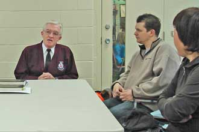 | 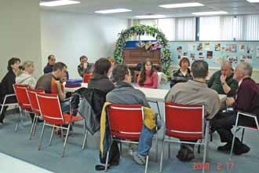 |
| Появились первые претензии к "хозяевам" NYT: почему
нет квалифицированного детского служения-обучения? Ответ был незамедлительный: беритесь за дело сами, у вас для этого все есть, а что не хватает - мы добавим! Жизнь продолжается! |